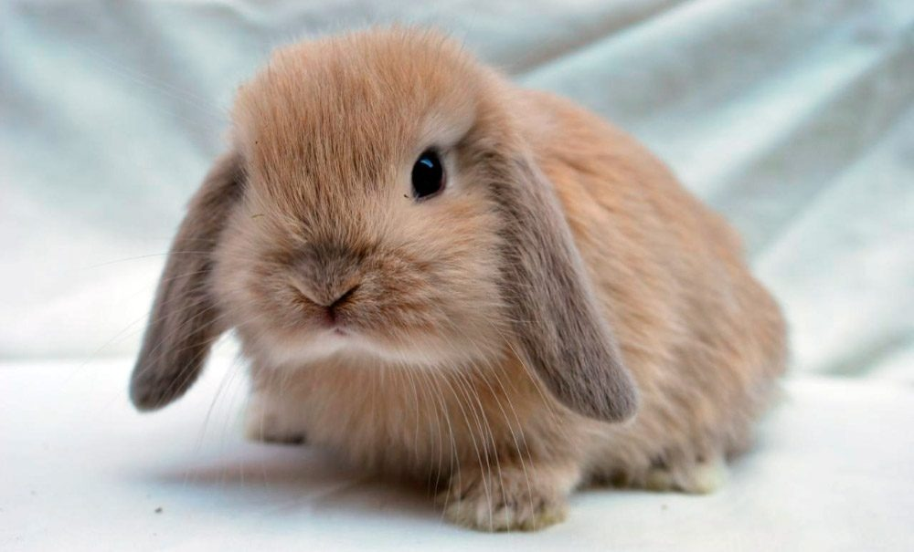

El conejo se caracteriza por tener un cuerpo cubierto de un pelaje espeso y lanudo, de color pardo pálido a gris o rojizo, que permite su camuflaje para evitar a sus depredadores. Pesa entre 1,5 y 2,5 kg en estado salvaje. Tiene orejas largas de hasta 7 cm las cuales le ayudan a regular la temperatura del cuerpo y una cola muy corta. Sus patas anteriores son más cortas que las posteriores. Mide de 33 a 50 cm en condiciones afables, incluso más en razas domésticas para carne. Todas estas características que posee esta especie en estado salvaje pueden variar significativamente según la raza.
